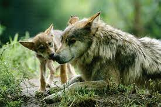

LOBO MEXICANO
Al día de hoy, únicamente existen 35 ejemplares del lobo mexicano en vida silvestre y se
encuentran en la categoría de “Especie en Peligro de extinción”.
Especie que tiene forma y tamaño parecido al de un perro de tamaño medio, con cuerpo
delgado, pero firme; cráneo largo y orejas rectas. Es un ejemplar que era común
encontrarlo en lugares como Estados Unidos, Sierra Madre Occidental y la Sierra Madre
Oriental. Además, se sabe que ha sufrido el paso de la población humana.
 |